Расчет выходного напряжения многополюсного линейного электрогенератора с транслятором на постоянных магнитах
1. Введение
Электрический генератор с вращающимся ротором, в частности с ротором на постоянных магнитах (ПМ) [1, 21 - 23] позволяет преобразовывать энергию вращательного движения двигателя или привода в электроэнергию. В то же время довольно часто встречаются источники энергии с возвратно-поступательным линейным движением. Объединение их с обычными электрогенераторами с вращающимся ротором для производства электроэнергии потребует дополнительного промежуточного преобразователя, уменьшающего коэффициент полезного действия (КПД) и надежность системы. Избавиться от лишнего звена позволяет линейный электрогенератор, в котором подвижная часть (транслятор), в частности, может быть выполнена на постоянных магнитах (ПМ), обеспечивающих поле возбуждения без использования токоподводящих щеток. Один из простых вариантов линейного электрогенератора - магнитоэлектрический преобразователь, представляющий из себя постоянный цилиндрический магнит, способный совершать колебательные движения в дифференциальном соленоиде [11]. В принципе, линейный электрический генератор с транслятором на ПМ можно рассматривать как пространственную трансформацию обычного электрогенератора с вращающимся ротором на ПМ [4, 10]. Упрощенная схема линейного электрогенератора с транслятором на ПМ показана на рис. 1.1.
Рис. 1.1. Схема линейного электрогенератора с транслятором на ПМ. Транслятор в поперечном сечении может быть цилиндрическим, квадратным или многоугольным, плоским (при этом форма статора соответствует форме транслятора). Электрогенератор может быть построен по однофазной или многофазной схеме.
Линейные электрогенераторы могут использоваться совместно с двигателями внутреннего сгорания с оппозитными поршнями, а также с паровыми машинами и двигателями Стирлинга, выполненными по аналогичной схеме (рис. 1.2). Данная схема позволяет отказаться от коленчатого вала, шатунов, маховика и подшипников и напрямую преобразовывать энергию линейного движения теплового двигателя в электрическую [14]. Она может использоваться в гибридных транспортных средствах [17], возобновляемых источниках энергии с водородными двигателями и даже в источниках энергии для освоения иных планет, совмещающих ядерный реактор, двигатель Стирлинга и линейный электрогенератор [9]. При этом испытывающий большие усилия сжатия транслятор электрогенератора предпочтительнее делать цилиндрическим, чтобы избежать его существенных поперечных деформаций.
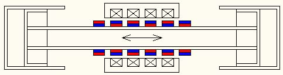
Рис. 1.2. Схема сопряжения линейного электрогенератора с транслятором на ПМ с тепловой машиной с оппозитными поршнями.
После появления высокоэнергетических ПМ и существенного снижения цены частотных электрических инверторов перспективным стало выглядеть применение линейных электрогенераторов с трансляторами на ПМ в качестве преобразователей энергии колебательного движения морских волн в энергобуях (рис. 1.3, 1.4) [3, 6, 8, 12], которые по аналогии с ветротурбинами формировали бы морские энергоплантации. В качестве привода может использоваться, например, находящийся на морской поверхности поплавок, прикрепленный тросом к транслятору линейного электрогенератора, установленного на дне (рис. 1.3). Поскольку транслятор генератора работает в основном на растяжение, то его форма может быть произвольной, в том числе плоской.

Рис. 1.3. Схема сопряжения линейного электрогенератора с транслятором на ПМ с морским энергобуем. Транслятор электрогенератора крепится с одной стороны с помощью троса к поплавку энергобуя, создающему подъемную силу, а с другой стороны - к морскому дну с помощью пружины, обеспечивающей возвратное движение.
Другой вариант полнопогруженной конструкции - закрепленный на морском дне нижний цилиндр, содержащий линейный электрогенератор, транслятор которого связан с верхним цилиндром, двигающимся вверх и вниз под действием разницы давлений при прохождении гребня и впадины волны и за счет энергии сжатого внутри цилиндров воздуха, играющего роль возвратной пружины (рис. 1.4) [8].
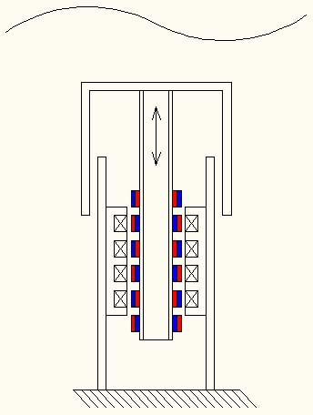
Рис. 1.4. Схема линейного электрогенератора с транслятором на ПМ, находящегося в установленном на морском дне нижнем цилиндре и соединенного с полнопогруженным верхним цилиндром, совершающим возвратно-поступательные вертикальные движения за счет разницы давлений при прохождении гребня волны и ее впадины и энергии сжатого внутри цилиндров воздуха (Archimedes Wave Swing).
Еще одно из возможных направлений использования линейных электрогенераторов - утилизаторы рассеянной энергии колебательного типа, а также энергии движения частей человеческого тела [13, 15] для питания различных датчиков или электронных устройств. Так как размеры подобного рода генераторов, как правило, невелики, то их форма может быть произвольной, обеспечивая удобство установки и оптимальные эксплуатационные характеристики (рис. 1.5).
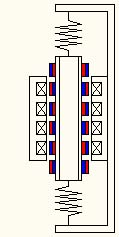
Рис. 1.5. Схема линейного электрогенератора с транслятором на ПМ для утилизации энергии колебательных движений (возникающих, например, при ходьбе). Транслятор электрогенератора, выполняющий одновременно роль подвижной массы, крепится в станине, связанной со статором, на пружинах, обеспечивающих возвратно-поступательные колебательные движения с частотой, близкой к резонансной.
2. Варианты конструкций линейных электрогенераторов с ПМ
Некоторые варианты схем линейных электрогенераторов на ПМ из множества возможных показаны на рис. 2.1 - 2.3 [16]. На рис. 2.1 приведен пример схемы построения трехфазного линейного электрогенератора с транслятором цилиндрической формы на кольцевых ПМ, имеющих направление намагниченности по радиусу транслятора.
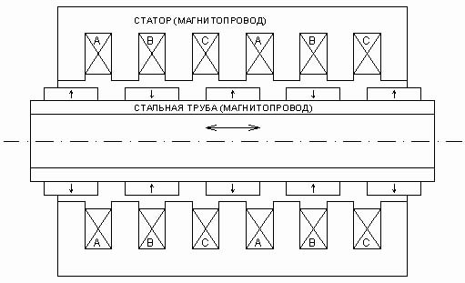
Рис. 2.1. Трехфазный линейный электрогенератор. Транслятор - стальная цилиндрическая труба, выполняющая роль силового основания и магнитопровода, с кольцевыми ПМ (направление намагниченности - по радиусу транслятора). Статор - магнитопровод с зубцами и пазами под кольцевые катушки. Соотношение шага зубцов статора и магнитных полюсов - 3 к 2. Каждый паз статора полностью заполняет одна катушка одной фазы, катушки в пазах чередуются по фазе.
На рис. 2.2 показана возможная схема построения трехфазного линейного электрогенератора с транслятором цилиндрической формы на кольцевых ПМ, намагниченность которых параллельна оси транслятора.
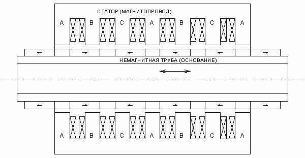
Рис. 2.2. Трехфазный линейный электрогенератор. Транслятор - немагнитная цилиндрическая труба, выполняющая роль силового основания, с кольцевыми ПМ (направление намагниченности - по оси транслятора) и кольцевыми стальными проставками между ними. Статор - магнитопровод с зубцами и пазами под кольцевые катушки. Соотношение шага зубцов статора и магнитных полюсов - 3 к 2. В каждом пазе статора находятся две катушки разных фаз, катушки одной фазы охватывают один зубец статора, зубцы статора, относящиеся к разным фазам, чередуются.
На рис. 2.3 приведена схема построения трехфазного линейного электрогенератора с транслятором цилиндрической формы с кольцевыми ПМ в виде сборки Холбаха [Halbach, 7].
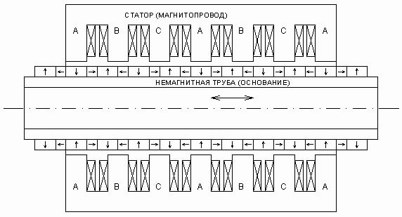
Рис. 2.3. Трехфазный линейный электрогенератор. Транслятор - немагнитная цилиндрическая труба, выполняющая роль силового основания, с кольцевыми ПМ в виде сборки Холбаха (направления намагниченности по оси и по радиусу транслятора чередуются). Статор - магнитопровод с зубцами и пазами под кольцевые катушки. Соотношение шага зубцов статора и магнитных полюсов - 3 к 4. В каждом пазе статора находятся две катушки разных фаз, катушки одной фазы охватывают один зубец статора, зубцы статора, относящиеся к разным фазам, чередуются.
Как уже было указано выше, возможны и другие схемы построения линейных электрогенераторов различной формы.
3. Теоретическая часть
3.1. Общие соотношения
В соответствии с законом электромагнитной индукции Фарадея [19] при изменении потокосцепления Y магнитного поля и катушки во времени t в катушке возникает электродвижущая сила (ЭДС) E(t):
Это соотношение может быть преобразовано к виду:
где z – координата вдоль оси линейного электрогенератора, dz/dt – скорость движения транслятора электрогенератора (рис. 3.1.1).
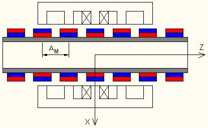
Рис. 3.1.1. Схема для расчета ЭДС линейного электрогенератора. В начальном положении z = 0 зубец статора находится напротив магнитного полюса транслятора. Катушка представляет собой два встречно-последовательно включенных цилиндрических соленоида, охватывающих зубец статора с двух сторон. Потокосцепление катушки с магнитным полем максимально.
Пусть потокосцепление катушки меняется по гармоническому закону:
где AM – расстояние между соседними магнитными полюсами транслятора (в начальном положении z = 0 магнитный полюс транслятора находится напротив зубца статора, обеспечивающего потокосцепление с катушкой, длина транслятора достаточно большая, чтобы не учитывать эффекты краев, рис. 3.1.1). Т. е. когда транслятора находится в точке z = 0 потокосцепление равно Y0, при смещении транслятора на z = AM потокосцепление становится равным –Y0, т. к. полярность соседнего магнита противоположна. Тогда:

Если движение транслятора происходит по гармоническому закону с амплитудой z0 относительно центрального положения z = 0 и частотой F (т. е. транслятор совершает ход в диапазоне [-z0, z0]):
то скорость транслятора dz/dt:

Тогда для ЭДС, как функции времени:
Например, для z0 = 0.01 м, F = 10 Гц, AM = 0.008 м:
Ниже на рис. 3.1.2 показаны формы ЭДС катушки для вышеуказанных значений z0 = 10 мм, F = 10 Гц и AM = 6 мм, 8 мм, 10 мм.
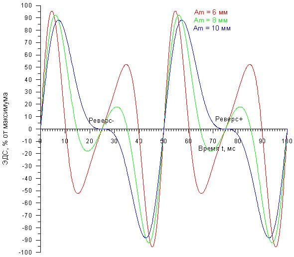
Рис. 3.1.2. Форма ЭДС катушки для z0 = 0.01 м, F = 10 Гц, AM = 0.006 м (красная линия), AM = 0.008 м (зеленая линия), AM = 0.01 м (синяя линия). В положении транслятора z = 0 (t = 0, t = 50 мс, t = 100 мс) скорость его движения максимальна. В положении транслятора z = +10 мм (t = 25 мc, t = 75 мс) происходит изменение направления его движения на противоположное, а его скорость в этот момент времени равна нулю.
Если в начальном положении z = 0 зубец статора, обеспечивающий потокосцепление с катушкой, находится посередине между разнополярными магнитными полюсами транслятора (длина транслятора достаточно большая, чтобы не учитывать эффекты краев, рис. 3.1.3), то потокосцепление катушки изменяется по закону:
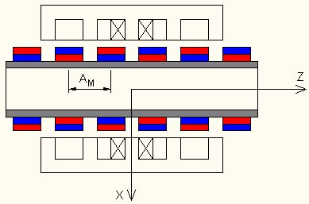
Рис. 3.1.3. Схема для расчета ЭДС линейного электрогенератора. В начальном положении z = 0 зубец статора находится посередине между магнитными полюсами транслятора. Катушка представляет собой два встречно-последовательно включенных цилиндрических соленоида, охватывающих зубец статора с двух сторон. Потокосцепление катушки с магнитным полем минимально.
При движении транслятора по гармоническому закону с амплитудой z0 относительно центрального положения z = 0 и частотой F (т. е. транслятор двигается в диапазоне [-z0, z0]):
получаем для потокосцепления и ЭДС:
Например, для z0 = 0.01 м, F = 10 Гц, AM = 0.008 м:
Ниже на рис. 3.1.4 показаны формы ЭДС катушки для вышеуказанных значений z0 = 10 мм, F = 10 Гц и AM = 6 мм, 8 мм, 10 мм.
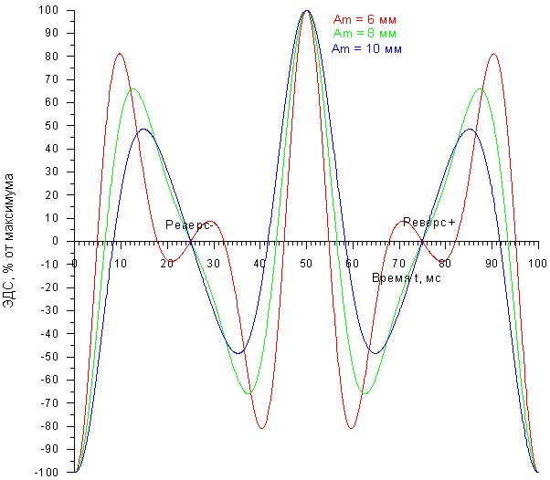
Рис. 3.1.4. Форма ЭДС катушки для z0 = 0.01 м, F = 10 Гц, AM = 0.006 м (красная линия), AM = 0.008 м (зеленая линия), AM = 0.01 м (синяя линия). В положении транслятора z = 0 (t = 0, t = 50 мс, t = 100 мс) скорость его движения максимальна. В положении якоря z = +10 мм (t = 25 мc, t = 75 мс) происходит изменение направления его движения на противоположное, а его скорость в этот момент времени равна нулю.
В трехфазном генераторе потокосцепление меняется по гармоническому закону со сдвигом 1200 (или 2p/3) между фазами, например, когда для одной из фаз (скажем, фаза A) в начальном положении z = 0 магнитный полюс транслятора находится напротив зубца сердечника катушки:
Тогда ЭДС фаз при движении транслятора со скоростью dz/dt:
Так как:

Формы ЭДС для z0 = 0.01 м, F = 10 Гц, AM = 0.008 м, когда в начальном положении транслятора z = 0 зубец фазы A находится напротив магнитного полюса, показаны на рис. 3.1.5.
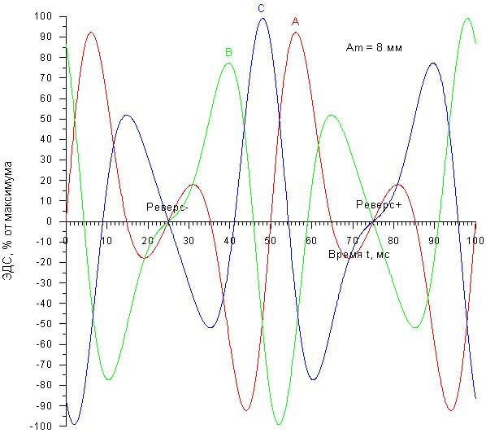
Рис. 3.1.5. Форма ЭДС фаз трехфазного генератора для z0 = 0.01 м, F = 10 Гц, AM = 0.008 м. Красная линия – фаза A, зеленая линия – фаза B, синяя линия – фаза C. В начальном положении транслятора z = 0 зубец фазы A находится напротив магнитного полюса. В положении транслятора z = 0 (t = 0, t = 50 мс, t = 100 мс) скорость его движения максимальна. В положении транслятора z = +10 мм (t = 25 мc, t = 75 мс) происходит изменение направления его движения на противоположное, а его скорость в этот момент времени равна нулю.
Если в трехфазном генераторе в начальном положении z = 0 зубец сердечника катушки фазы A находится посередине между магнитными полюсами транслятора:
то для ЭДС фаз получаем:
Формы ЭДС для z0 = 0.01 м, F = 10 Гц, AM = 0.008 м, когда в начальном положении транслятора z = 0 зубец фазы A находится посередине между магнитными полюсами показаны на рис. 3.1.6.
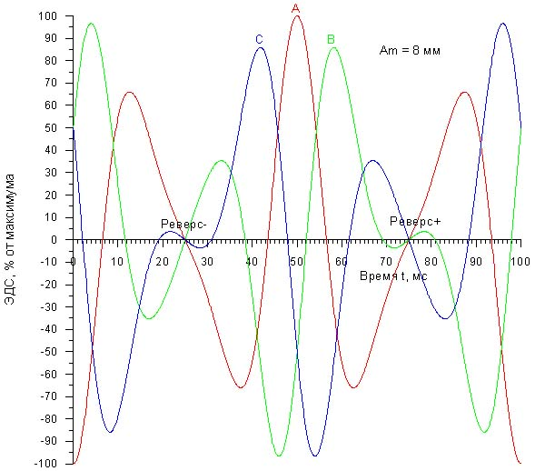
Рис. 3.1.6. Форма ЭДС фаз трехфазного генератора для z0 = 0.01 м, F = 10 Гц, AM = 0.008 м. Красная линия – фаза A, зеленая линия – фаза B, синяя линия – фаза C. В начальном положении транслтора z = 0 зубец фазы A находится посередине между магнитными полюсами. В положении транслятора z = 0 (t = 0, t = 50 мс, t = 100 мс) скорость его движения максимальна. В положении транслятора z = +10 мм (t = 25 мc, t = 75 мс) происходит изменение направления его движения на противоположное, а его скорость в этот момент времени равна нулю.
3.2. Аналитическая оценка действующего значения ЭДС [18]
Чтобы иметь возможность рассчитать мощность генератора, необходимо найти действующее (среднеквадратичное) значение напряжения катушки в диапазоне хода транслятора туда и обратно (полный период 1/F). Возьмем вначале уравнение для ЭДС вида:
где b = 0, +2p/3.
Здесь, как и выше речь пока идет об одной катушке одной фазы. Амплитуда ЭДС E0 может быть определена соотношением:
Таким образом:
Действующее (среднеквадратичное) значение ЭДС E следует определить на интервале одного периода хода транслятора [0, 1/F]:
Выносим амплитуду ЭДС E0 из под знака квадратного корня:
Вводя обозначения x = 2 p F t, a = p z0/AM, получаем:
Вначале необходимо вычислить интеграл Int1:
где x = 2 p F t, a = p z0/AM, b = 0, +2p/3. Например, для z0 = 10 мм, AM = 8 мм a = 1.25 ∙ p ≈ 4.
Выполним подстановку y = a sin(x). На интервале x = [0, p/2] у изменяется от 0 до a , на интервале x = [p/2, p] – от a до 0, на интервале x = [p/2, 3p/2] – от 0 до -a и на интервале x = [3p/2, 2p] – от -a до 0. Тогда:
Интеграл Int1 преобразуется к виду Int11 + Int12, где:
В итоге:
Если выполнить подстановку:
то интеграл Int1 можно записать так (когда y изменяется от -a до a, x изменяется от -1 до 1):
Разложим квадратный корень под знаком интеграла в ряд Тейлора в точке x = 0 и, возможно, ограничимся несколькими первыми его членами для хотя бы приблизительной оценки действующего значения ЭДС. В точке x = 0 надо разлагать в ряд Тейлора функцию вида:
Первая производная:
Вторая производная:
Таким образом:
Тогда:
Ниже на рис. 3.2.1 показан график функций, стоящих под знаком интеграла при a = 5p/4 b = 0. Первая функция (красный цвет):
Вторая функция (зеленый цвет):
Третья функция (синий цвет):
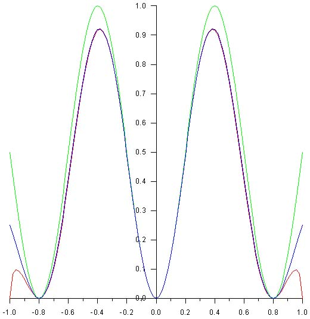
Рис. 3.2.1. Вклад различных функций в расчетное значение Int1.
Из графиков рис. 3.2.1 видно, что два члена разложения в ряд Тейлора (синий график) дают вполне хорошее приближение исходной функции (красный график). В принципе, даже один член разложения (зеленый график) даст достаточно точные оценочные результаты, т. к. в конечном счете после интегрирования извлекается квадратный корень.
Далее находим следующие величины, определяющие значение Int1:
Так как a = p z0/AM, b = 0, +2p/3, то, например, для a = np, где n – целое число, вычисляемое значение Int13 составит 2. Можно сделать первый вывод. Так как вклад Int14 отрицательный, то интеграл Int1 < 2. Таким образом, можно оценить верхнюю границу действующего напряжения:
Таким образом, уровень действующего значения ЭДС, равный 56 % от ее амплитудного значения можно принять в качестве верхней, причем достаточно точной оценки.
Далее находим вторую величину, определяющую значение Int1:
Ищем величину Int15:
Таким образом:
Так как a = p z0/AM, b = 0, +2p/3, то, например, для a = np, где n – целое число, вычисляемое значение Int1 составит 5/3. Тогда:
Таким образом, уровень действующего значения ЭДС, равный 50 % от ее амплитудного значения можно принять в качестве окончательной достаточно точной оценки (так как следующие неучтенные члены разложения в ряд Тейлора вносят отрицательный вклад).
Теперь рассмотрим уравнение для ЭДС вида:
где b = 0, +2p/3. Здесь, как и выше речь пока идет об одной катушке одной фазы. Амплитуда ЭДС E0 может быть определена соотношением:
Таким образом:
Действующее (среднеквадратичное) значение ЭДС E определяем на интервале одного периода хода транслятора [0, 1/F]:
Выносим амплитуду ЭДС E0 из под знака квадратного корня:
Вводя обозначения x = 2 p F t, a = p z0/AM, получаем:
Вначале необходимо вычислить интеграл Int2:
где x = 2 p F t, a = p z0/AM, b = 0, +2p/3.
Тогда:
Таким образом, в обоих случаях уровень действующего значения ЭДС, равный 50 % от ее амплитудного значения можно принять в качестве окончательной достаточно точной оценки.
3.3. Численная оценка действующего значения ЭДС
Помимо аналитической, можно произвести также и численную оценку соотношения среднеквадратичной (действующей) и амплитудной ЭДС для разных значений входящих параметров с использованием специализированной программы RMS_Calculation.exe. Скопированный файл RMS_Calculation.rar (~223 Кбайт, архиватор WinRAR 3.60) может быть проверен на отсутствие вирусного кода в режиме on-line [24]. Ниже в таблице 3.3.1 приведены результаты численного интегрирования для различных значений a и b.
Таблица 3.3.1. Результаты программного численного вычисления оценки действующего значения ЭДС через ее амплитудное значение.
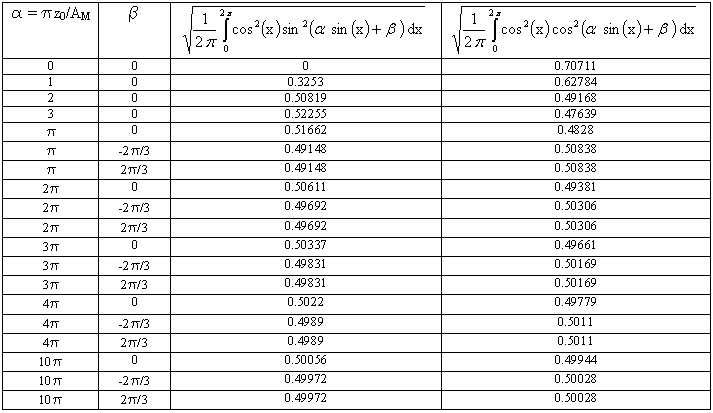
Из таблицы видно, что оценка действующего значения ЭДС приблизительно в 50 % от ее амплитудного значения справедлива для реальных значений амплитуды смещения транслятора от центрального положения z0 больших, чем расстояние между магнитными полюсами AM. Для предельного случая a = 0, b = 0 имеем соотношение между амплитудным и действующим значением ЭДС неискаженной синусоидальной формы.
3.4. Оценка действующего значения ЭДС в предположении равномерного движения транслятора с постоянной средней скоростью
Скорость якоря dz/dt определяется соотношением:

Скорость транслятора dz/dt достигает максимума в его центральном положении, когда z = 0, и равна нулю на краях диапазона, когда z = z0 или z = -z0:
Средняя скорость движения транслятора <dz/dt> определяется средним значением функции косинуса на интервале [-p/2, p/2]:
на которое надо умножить амплитудное значение скорости 2pz0F. Результат:
Если сделать предположение, что движение транслятора происходит с постоянной скоростью в интервале [-z0, z0] с частотой F (с допущением, что на краях интервала скорость мгновенно изменяется на противоположную), то средняя скорость движения транслятора <dz/dt> определяется как отношение пройденной дистанции 2z0 (рабочий ход) к затраченному времени 2/F (половина периода):
Т. е. можно считать, что средняя скорость движения транслятора определяется только амплитудой и частотой его колебаний независимо от закона его движения и равна 4z0F. Например, для z0 = 0.01 м, F = 600 циклов в минуту = 10 Гц средняя скорость движения транслятора будет равна 0.4 м/с. Предположим теперь, что транслятор имеет бесконечную длину и движется в одну сторону со средней скоростью 4z0F. Выражения для ЭДС вида:
и
с учетом:
можно переписать с заменой мгновенной скорости dz/dt на среднюю скорость <dz/dt>:
и
Тогда среднеквадратичное значение ЭДС E для равномерного движения будет определяться среднеквадратичным значением функции синус или косинус:
Так как амплитудное значение ЭДС E0:
то
Эта оценка (в 45 % от амплитудного значения) достаточна близка к полученной ранее (примерно 50 %). Если вместо среднего значения скорости брать ее среднеквадратичное значение <<dz/dt>>, которое определяется через среднеквадратичное значение функции синус или косинус на интервале, равном периоду функции:
то выражения:
и
при замене скорости dz/dt на среднеквадратичное ее значение можно переписать в виде:
и
Среднеквадратичное значение ЭДС E для равномерного движения будет определяться среднеквадратичным значением функции синус или косинус:
Так как амплитудное значение ЭДС E0:
то:
Данная оценка (в 50 % от амплитудного значения) близка к ранее полученной (около 50 %).
Таким образом, можно сделать вывод, что все вышеприведенные рассуждения дают сходные оценки действующего значения ЭДС линейного электрогенератора в 50 % от ее амплитудного значения.
4. Расчет параметров катушек электрогенератора
Кольцевые катушки
генератора представляют собой цилиндрические соленоиды, расположенные в пазах
статора. Геометрические параметры цилиндрического соленоида (рис. 4.1):
R1 =
R1 – радиус отверстия
R2 =
R2 – внешний радиус
H – высота
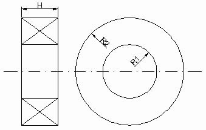
Рис. 4.1. Цилиндрический соленоид: R1 = R1 – внутренний радиус соленоида (радиус отверстия), R2 = R2 – внешний радиус соленоида, H – высота соленоида.
Число витков N обмотки цилиндрического соленоида может быть найдено по формуле:
где:
D –
диаметр обмоточного провода без изоляции (для проводов прямоугольного сечения
производится пересчет по формуле D=(4s/p)1/2,
где s – площадь поперечного сечения провода, м2), м
l
– фактор упаковки или коэффициент заполнения (отношение объема проводника к
объему обмотки; при равномерной намотке равен отношению суммарной площади
проводников в поперечном сечении обмотки (без учета изоляции) к площади
поперечного сечения обмотки), 0 <
l < 1 [25]
Расчет активного сопротивления R цилиндрического соленоида производится следующим образом:
где re – удельное электрическое сопротивление обмоточного провода, Ом ∙ м. Если в линейном электрогенераторе один зубец статора окружает сдвоенная катушка, состоящая из двух одинаковых цилиндрических соленоидов с противоположным направлением намотки и включенных последовательно, то ее сопротивление RC будет вдвое больше:
Рассеиваемая в одиночном соленоиде мощность P и плотность тока в его обмотке j связаны следующими соотношениями через конструктивные параметры обмотки:
Плотность тока в проводе обмотки равна отношению известного значения тока I к площади поперечного сечения провода:
Плотность тока в обмотке j может быть рассчитана аналогично с учетом фактора упаковки:

Ток, текущий через обмотку (ток в проводе обмотки), может быть выражен через плотность тока обмотки следующим образом:
Для расчета одиночного цилиндрического соленоида по вышеизложенным формулам можно использовать программу-калькулятор Coil [5].
5. Расчет потокосцепления цилиндрических катушек с магнитным полем
5.1. Расчет потокосцепления одиночной цилиндрической катушки с магнитным полем статора
Схема для расчета потокосцепления цилиндрической катушки, полностью занимающей паз статора, с магнитным полем статора представлена на рис. 5.1.1.
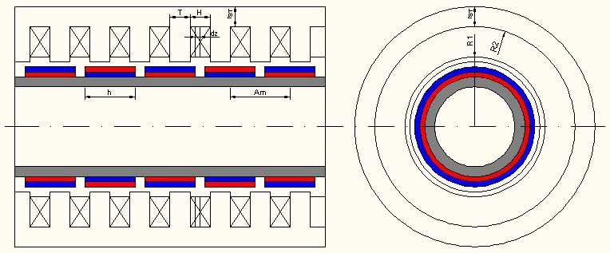
Рис. 5.1.1. Схема для расчета потокосцепления одиночной катушки с магнитным полем наружного ярма статора. Am = AM – расстояние между магнитными полюсами, h – высота магнита, T – ширина зубца статора, R1 – внутренний радиус катушки (радиус отверстия), R2 – внешний радиус катушки (внутренний радиус ярма статора), H – высота катушки, rST – толщина внешнего ярма статора.
Потокосцепление катушки будет определяться магнитным потоком, проходящим через наружное ярмо статора. Потокосцепление катушки с магнитным потоком через наружное ярмо dY0 (амплитудное значение, когда ближние зубцы статора находится симметрично над соседними магнитными полюсами) будет определяться формулой:
где dN – число витков в кольцевой катушке с отверстием радиусом R1, внешним радиусом R2 и высотой dz, SST – площадь наружного ярма статора (фактически, площадь кольца), B0(x) – значение индукции магнитного поля в наружном ярме в точке с координатой x.
С учетом:
и производя интегрирование по высоте катушки, получаем:
где B0 – среднее значение магнитной индукции в наружном ярме статора по высоте катушки. Потокосцепление Y0 можно также записать в виде:
Т. е. потокосцепление катушки равно потоку магнитной индукции B0 через наружное ярмо статора на протяжении высоты катушки, умноженному на число витков катушки N. Если толщина наружного ярма статора цилиндрической формы составляет rST, а его внутренний радиус совпадает с наружным радиусом катушки R2 (максимальное заполнение паза обмоткой), то:
Для rST << R2:
Тогда:
Для rST << R2:
С учетом того, что амплитуда ЭДС E0 катушки определяется соотношением:
получаем:
Для rST << R2:
5.2. Расчет потокосцепления двух цилиндрических оппозитных катушек с магнитным полем статора
Схема для расчета потокосцепления двух цилиндрических оппозитных (с противоположным направлением обмотки и включенных последовательно) катушек с магнитным полем зубца статора, который они охватывают, представлена на рис. 5.2.1.
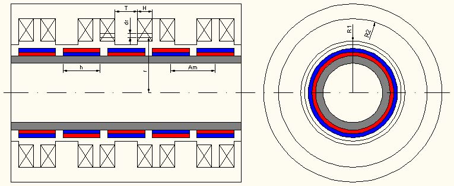
Рис. 5.2.1. Схема для расчета потокосцепления сдвоенной катушки, охватывающей один зубец статора. Am = AM – расстояние между магнитными полюсами, h – высота магнита, T – ширина зубца статора, R1 – внутренний радиус катушки (радиус отверстия), R2 – внешний радиус катушки, H – высота катушки, r – радиус точки расчета потокосцепления.
Способ расчета потокосцепления катушки через магнитную индукцию в наружном ярме статора изложен в п. 5.1. Для сдвоенной катушки, охватывающий зубец статора с двух сторон рассчитанное потокосцепление следует соответственно удвоить. В данном пункте сделаем расчет потокосцепления через магнитную индукцию в зубце статора.
При использовании сердечника магнитное поле будет в основном сосредоточено в нем и распределено достаточно равномерно. Для расчета потокосцепления катушки и создаваемой им ЭДС рассмотрим две оппозитных кольцевых (цилиндрических) катушки радиуса r с радиальной толщиной dr, в каждой из которых находится по dN витков. Потокосцепление этих катушек с магнитным потоком через сердечник dY0 (амплитудное значение, когда сердечник - зубец статора - находится точно над магнитным полюсом) будет определяться формулой:
где dN – число витков в кольцевой катушке радиуса r высотой H толщиной dr, S(r) – площадь сердечника на радиусе r (фактически, площадь кольца радиуса r высотой T, B0(r) – значение индукции магнитного поля в сердечнике в точке с радиусом r. С учетом:
и
получаем:
Производя интегрирование по r в пределах от R1 до R2, получим:
где B0 – среднее значение магнитной индукции по радиальной толщине сердечника (от R1 до R2). Потокосцепление Y0 можно также записать в виде:
Так как число витков N соленоида, определяемого геометрическими параметрами R1, R2, H:
то
Т. е. потокосцепление сдвоенной катушки равно потоку магнитной индукции B0 через поверхность кругового сечения зубца статора шириной T на среднем радиусе соленоида (R2 + R1)/2, умноженному на число витков каждой катушки N.
С учетом того, что амплитуда ЭДС E0 сдвоенной катушки определяется соотношением:
получаем:
Сравним расчет для одиночной катушки через магнитную индукцию в наружном ярме статора:
с расчетом для сдвоенной катушки через магнитную индукцию в зубце статора:
Средний радиус (R2 + R1)/2 мало отличается от R2. В то же время магнитный поток из зубца расходится в разные стороны в наружном ярме, т. е. делится пополам, когда зубец находится над магнитным полюсом. Фактически, это означает, что для зубца статора произведение B0 ∙ T будет вдвое больше, чем произведение B0 ∙ rST для наружного ярма статора, то есть амплитуда ЭДС сдвоенной катушки вдвое больше амплитуды ЭДС одиночной катушки, как и должно быть.
Если каждая фаза генератора содержит m параллельно включенных сдвоенных кольцевых катушек, и фазовый сдвиг между ними отсутствует, то амплитуда ЭДС одной фазы равна амплитуде ЭДС сдвоенной катушки.
Если каждая фаза генератора содержит m последовательно включенных пар кольцевых катушек, и фазовый сдвиг между ними отсутствует, то для амплитуды ЭДС одной фазы, например, фазы A – EA0 можно записать соотношение:
6. Расчет модели линейного электрогенератора
Эскиз расчетной модели линейного электрогенератора представлен на рис. 6.1.
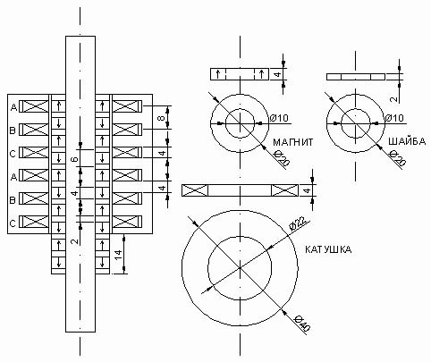
Рис. 6.1. Модель линейного электрогенератора для расчета.
Транслятор генератора состоит из центрального немагнитного вала из дюралюминия, на который надеты кольцевые постоянные магниты, разделенные стальными шайбами толщиной 2 мм. Типоразмер магнитов К10х20х4, материал – неодим-железо-бор, намагниченность по оси, коэрцитивная сила по намагниченности 850 кА/м [20]. Смежные магниты имеют противоположное направление намагниченности. Статор набран из стальных пластин двух различных конфигураций с прорезями. При сборке пластины формируют пазы статора, в которые вставляются цилиндрические катушки (диаметр отверстия 22 мм, внешний диаметр 40 мм, высота 4 мм). Катушки разных фаз идут последовательно друг за другом A-B-C-A-B-C. Катушки одной фазы соединяются электрически последовательно. Стальные детали изготовлены из стали, магнитные свойства которой показаны на рис. 6.2 (магнитные свойства аналогичны марке 1010 или Ст10). Для деталей транслятора (шайб) может использоваться сплошная малоуглеродистая сталь, детали статора следует делать из ламинированной (тонкие листы с радиальными прорезями) электротехнической стали.

Рис. 6.2. Магнитные свойства стали для расчета магнитной системы электрогенератора.
Расчет магнитного поля в магнитной системе электрогенератора выполнен методом конечных элементов [2, 26]. Распределение магнитного поля показано на рис. 6.3.
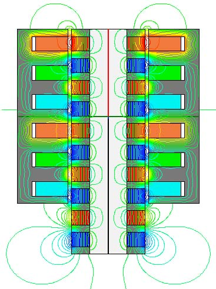
Рис. 6.3. Распределение магнитного поля в магнитной системе линейного электрогенератора (с учетом реакции якоря).
Амплитуда ЭДС одиночной катушки определяется соотношением:
где F0 – максимальный магнитный поток, охватывающий катушку через наружное ярмо статора, когда магнитные полюса находятся прямо напротив зубцов статора, между которыми расположена данная катушка (транслятор при этом находится в положении, близком к среднему), а N – число витков катушки:
Для двух катушек одной фазы (например, A) включенных последовательно:
Для следующих
параметров:
R1
= 0.011 м
R2 = 0.02 м
H = 0.004 м
z0 = 0.007 м
F = 10 Гц
l
= 0.6
D
= 0.0003 м
rE
= 1.67 ∙ 10-8 Ом ∙ м (медный провод)
l
= 0.6 (неплотная намотка виток к витку или внавал)
Число витков каждой катушки:
Активное сопротивление каждой катушки:
Активное сопротивление одной фазы, состоящей из двух последовательно включенных катушек составит примерно 14 Ом.
Рассчитанные индуктивности каждой фазы, состоящей из двух последовательно включенных катушек, составляют примерно по 28 мГн, когда генератор работает под нагрузкой.
Амплитуда ЭДС одной фазы, например, фазы A:
Рассчитанные
усредненные значения максимумов магнитных потоков во внешнем ярме статора при
нулевом токе обмоток (режим холостого хода):
Фаза A:
F0
= (98.2841 + 97.9293)/2 = 98.1067 мкВб
Фаза B:
F0
= (98.2447 + 97.188)/2 = 97.71635 мкВб
Фаза C:
F0 = (97.8934 + 98.2657)/2 = 98.07955 мкВб
Тогда:
EA0
= 13.81 В
EB0
= 13.75 В
EC0
= 13.80 В
Если транслятор движется из одного крайнего положения в другое (от точки –z0 до точки +z0 (-7 … +7 мм) по косинусоидальному закону:
то ЭДС каждой фазы для режима холостого хода может быть выражена аналитически (в виде формулы):
Зависимость ЭДС фаз от времени представлена на рис. 6.4 (пунктирные линии).
Сделаем расчет ЭДС каждой фазы через изменение соответствующих рассчитываемых магнитных потоков во внешнем ярме статора при движении транслятора. Закон электромагнитной индукции Фарадея [19]:
может быть записан в приближенном виде:
где под E(t) подразумевается ЭДС двух последовательно включенных катушек одной фазы, N – число витков одной катушки (одинаковое для обоих катушек), F(ti) – суммарный магнитный поток через внешнее ярмо статора для этих двух катушек в момент времени ti. Движение транслятора от одного крайнего положения до другого (от точки –z0 до точки +z0 (-7 … +7 мм) представлено в виде:
Тогда моменты времени ti будут определяться соотношением:
При N = 306:
Соответствующие расчеты для каждой из фаз представлены в таблицах 6.1 – 6.3.
Таблица 6.1. Расчет ЭДС фазы A в режиме холостого хода.
|
z, мм |
t, мкс |
FA1, мкВб |
FA2, мкВб |
FA, мкВб |
EA(t), В |
|
-7.0 |
0 |
-125.296 |
-97.9783 |
-223.2743 |
0 |
|
-6.5 |
6052 |
-117.016 |
-94.8103 |
-211.8263 |
-0.5788 |
|
-6.0 |
8612 |
-103.263 |
-85.5095 |
-188.7725 |
-2.7556 |
|
-5.5 |
10615 |
-84.2166 |
-70.4658 |
-154.6824 |
-5.2080 |
|
-5.0 |
12338 |
-60.6049 |
-50.1837 |
-110.7886 |
-7.7954 |
|
-4.5 |
13887 |
-34.0645 |
-25.9695 |
-60.034 |
-10.0264 |
|
-4.0 |
15319 |
-6.13455 |
0.143591 |
-5.990959 |
-11.5483 |
|
-3.5 |
16667 |
21.3787 |
26.1805 |
47.5592 |
-12.1560 |
|
-3.0 |
17951 |
46.7309 |
50.2648 |
96.9957 |
-11.7816 |
|
-2.5 |
19188 |
68.4132 |
70.5045 |
138.9177 |
-10.3704 |
|
-2.0 |
20388 |
84.6886 |
85.563 |
170.2516 |
-7.9901 |
|
-1.5 |
21563 |
94.8844 |
94.7572 |
189.6416 |
-5.0497 |
|
-1.0 |
22719 |
98.2841 |
97.9293 |
196.2134 |
-1.7396 |
|
-0.5 |
23862 |
94.462 |
94.7978 |
189.2598 |
1.8616 |
|
0 |
25000 |
83.7992 |
85.4645 |
169.2637 |
5.3768 |
|
0.5 |
26138 |
67.1009 |
70.4044 |
137.5053 |
8.5396 |
|
1.0 |
27281 |
45.0799 |
50.2458 |
95.3257 |
11.2922 |
|
1.5 |
28437 |
19.9238 |
26.0081 |
45.9319 |
13.0748 |
|
2.0 |
29612 |
-6.42645 |
0.0830019 |
-6.3434481 |
13.6138 |
|
2.5 |
30812 |
-32.1758 |
-25.9953 |
-58.1711 |
13.2161 |
|
3.0 |
32049 |
-56.3004 |
-50.0477 |
-106.3481 |
11.9177 |
|
3.5 |
33333 |
-76.6261 |
-70.3824 |
-147.0085 |
9.6901 |
|
4.0 |
34681 |
-91.7388 |
-85.4415 |
-177.1803 |
6.8491 |
|
4.5 |
36113 |
-100.932 |
-94.4955 |
-195.4275 |
3.8992 |
|
5.0 |
37662 |
-103.532 |
-97.7262 |
-201.2582 |
1.1518 |
|
5.5 |
39385 |
-99.1418 |
-94.4763 |
-193.6181 |
-1.3569 |
|
6.0 |
41388 |
-88.2115 |
-85.1316 |
-173.3431 |
-3.0974 |
|
6.5 |
43948 |
-71.2158 |
-70.1101 |
-141.3259 |
-3.8271 |
|
7.0 |
50000 |
-49.035 |
-49.7989 |
-98.8339 |
-2.1485 |
Таблица 6.2. Расчет ЭДС фазы B в режиме холостого хода.
|
z, мм |
t, мкс |
FB1, мкВб |
FB2, мкВб |
FB, мкВб |
EB(t), В |
|
-7.0 |
0 |
46.9878 |
50.0985 |
97.0863 |
0 |
|
-6.5 |
6052 |
23.4713 |
26.0916 |
49.5629 |
2.4029 |
|
-6.0 |
8612 |
-2.23609 |
0.457362 |
-1.778728 |
6.1369 |
|
-5.5 |
10615 |
-27.6972 |
-25.5211 |
-53.2183 |
7.8585 |
|
-5.0 |
12338 |
-51.4774 |
-49.4407 |
-100.9181 |
8.4714 |
|
-4.5 |
13887 |
-71.4678 |
-69.8113 |
-141.2791 |
7.9732 |
|
-4.0 |
15319 |
-86.1789 |
-84.6349 |
-170.8138 |
6.3112 |
|
-3.5 |
16667 |
-95.3129 |
-93.9469 |
-189.2598 |
4.1873 |
|
-3.0 |
17951 |
-98.2447 |
-97.188 |
-195.4327 |
1.4711 |
|
-2.5 |
19188 |
-95.0551 |
-93.9967 |
-189.0518 |
-1.5785 |
|
-2.0 |
20388 |
-85.5705 |
-84.752 |
-170.3225 |
-4.7760 |
|
-1.5 |
21563 |
-70.597 |
-69.6893 |
-140.2863 |
-7.8222 |
|
-1.0 |
22719 |
-50.1627 |
-49.4168 |
-99.5795 |
-10.7753 |
|
-0.5 |
23862 |
-26.1682 |
-25.6701 |
-51.8383 |
-12.7811 |
|
0 |
25000 |
-0.27282 |
0.24175 |
-0.03107 |
-13.9306 |
|
0.5 |
26138 |
25.5037 |
26.1153 |
51.619 |
-13.8883 |
|
1.0 |
27281 |
49.4975 |
50.2636 |
99.7611 |
-12.8884 |
|
1.5 |
28437 |
69.6223 |
70.5177 |
140.14 |
-10.6885 |
|
2.0 |
29612 |
84.6458 |
85.6821 |
170.3279 |
-7.8617 |
|
2.5 |
30812 |
93.9714 |
95.0138 |
188.9852 |
-4.7576 |
|
3.0 |
32049 |
97.124 |
98.3342 |
195.4582 |
-1.6012 |
|
3.5 |
33333 |
93.9759 |
95.3229 |
189.2988 |
1.4679 |
|
4.0 |
34681 |
84.6494 |
86.1496 |
170.799 |
4.1995 |
|
4.5 |
36113 |
69.7732 |
71.4751 |
141.2483 |
6.3146 |
|
5.0 |
37662 |
49.5201 |
51.3798 |
100.8999 |
7.9707 |
|
5.5 |
39385 |
25.5474 |
27.7441 |
53.2915 |
8.4551 |
|
6.0 |
41388 |
-0.424551 |
2.07601 |
1.651459 |
7.8891 |
|
6.5 |
43948 |
-26.0143 |
-23.4432 |
-49.4575 |
6.1091 |
|
7.0 |
50000 |
-50.0377 |
-47.076 |
-97.1137 |
2.4096 |
Таблица 6.3. Расчет ЭДС фазы C в режиме холостого хода.
|
z, мм |
t, мкс |
FC1, мкВб |
FC2, мкВб |
FC, мкВб |
EC(t), В |
|
-7.0 |
0 |
49.8183 |
48.9932 |
98.8115 |
0 |
|
-6.5 |
6052 |
70.1916 |
71.2976 |
141.4892 |
-2.1579 |
|
-6.0 |
8612 |
85.1943 |
88.3752 |
173.5695 |
-3.8346 |
|
-5.5 |
10615 |
94.5696 |
99.3222 |
193.8918 |
-3.1047 |
|
-5.0 |
12338 |
97.5772 |
103.59 |
201.1672 |
-1.2921 |
|
-4.5 |
13887 |
94.6475 |
101.001 |
195.6485 |
1.0902 |
|
-4.0 |
15319 |
85.323 |
91.7499 |
177.0729 |
3.9694 |
|
-3.5 |
16667 |
70.4654 |
76.5633 |
147.0287 |
6.8201 |
|
-3.0 |
17951 |
50.2185 |
56.3292 |
106.5477 |
9.6473 |
|
-2.5 |
19188 |
26.151 |
32.4057 |
58.5567 |
11.8717 |
|
-2.0 |
20388 |
-0.0968422 |
6.42997 |
6.3331278 |
13.3170 |
|
-1.5 |
21563 |
-25.8352 |
-20.0056 |
-45.8408 |
13.5874 |
|
-1.0 |
22719 |
-50.0451 |
-45.0844 |
-95.1295 |
13.0470 |
|
-0.5 |
23862 |
-70.4723 |
-67.0088 |
-137.4811 |
11.3382 |
|
0 |
25000 |
-85.5334 |
-83.8831 |
-169.4165 |
8.5872 |
|
0.5 |
26138 |
-94.7525 |
-94.4138 |
-189.1663 |
5.3106 |
|
1.0 |
27281 |
-97.8934 |
-98.2657 |
-196.1591 |
1.8721 |
|
1.5 |
28437 |
-94.852 |
-94.7645 |
-189.6165 |
-1.7319 |
|
2.0 |
29612 |
-85.4711 |
-84.6349 |
-170.106 |
-5.0810 |
|
2.5 |
30812 |
-70.603 |
-68.3827 |
-138.9857 |
-7.9357 |
|
3.0 |
32049 |
-50.1433 |
-46.7634 |
-96.9067 |
-10.4092 |
|
3.5 |
33333 |
-26.1597 |
-21.242 |
-47.4017 |
-11.7979 |
|
4.0 |
34681 |
-0.0175226 |
6.21608 |
6.1985574 |
-12.1674 |
|
4.5 |
36113 |
25.7609 |
33.9551 |
59.716 |
-11.4360 |
|
5.0 |
37662 |
49.9797 |
60.5729 |
110.5526 |
-10.0426 |
|
5.5 |
39385 |
70.4349 |
84.1446 |
154.5795 |
-7.8191 |
|
6.0 |
41388 |
85.3917 |
103.176 |
188.5677 |
-5.1924 |
|
6.5 |
43948 |
94.7476 |
117.031 |
211.7786 |
-2.7744 |
|
7.0 |
50000 |
97.8526 |
125.308 |
223.1606 |
-0.5755 |
На рис. 6.4 показаны графики ЭДС разных фаз при движении транслятора от одного крайнего положения до другого (один ход в одну сторону) в режиме холостого хода, полученные численным методом и аналитически. Соответствие результатов двух разных способов расчета достаточно хорошее. Некоторый временной лаг между графиками ЭДС одной фазы (сплошная и пунктирная линия одного цвета) может быть объяснен особенностями представления производной от магнитного потока по времени отношением разности соответствующих величин, отнесенному к конечному значению времени выбранного интервала (опережение на расчетный шаг по времени).
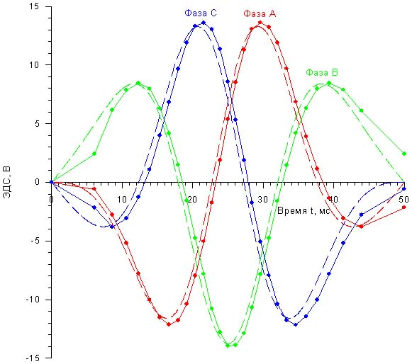
Рис. 6.4. Зависимость ЭДС фаз линейного электрогенератора от времени при движении транслятора из одного крайнего положения в другое в режиме холостого хода. Сплошные линии – расчет ЭДС численным методом, пунктирные линии – аналитическое выражение ЭДС через амплитудное значение, определенное по максимуму потокосцепления катушки.
При движении транслятор создает собственное усилие за счет взаимодействия магнитных полюсов с зубцами статора (эффект "магнитного залипания"). Зависимость усилия транслятора от его положения при движении из одного крайнего положения в другое в режиме холостого хода представлена в таблице 6.4 и на рис. 6.5.
Таблица 6.4. Усилие, создаваемое транслятором при движении в режиме холостого хода.
|
z, мм |
t, мкс |
F, Н |
|
-7.0 |
0 |
3.71484 |
|
-6.5 |
6052 |
2.53145 |
|
-6.0 |
8612 |
0.532565 |
|
-5.5 |
10615 |
-1.92576 |
|
-5.0 |
12338 |
-4.471 |
|
-4.5 |
13887 |
-5.22275 |
|
-4.0 |
15319 |
-0.931731 |
|
-3.5 |
16667 |
4.18784 |
|
-3.0 |
17951 |
6.78696 |
|
-2.5 |
19188 |
9.16275 |
|
-2.0 |
20388 |
12.7831 |
|
-1.5 |
21563 |
15.7136 |
|
-1.0 |
22719 |
13.4104 |
|
-0.5 |
23862 |
6.14661 |
|
0 |
25000 |
-0.0756045 |
|
0.5 |
26138 |
-6.65594 |
|
1.0 |
27281 |
-13.1466 |
|
1.5 |
28437 |
-15.5376 |
|
2.0 |
29612 |
-13.121 |
|
2.5 |
30812 |
-9.46588 |
|
3.0 |
32049 |
-6.97455 |
|
3.5 |
33333 |
-3.8811 |
|
4.0 |
34681 |
1.11989 |
|
4.5 |
36113 |
5.26285 |
|
5.0 |
37662 |
5.00634 |
|
5.5 |
39385 |
1.82105 |
|
6.0 |
41388 |
-0.236797 |
|
6.5 |
43948 |
-2.56473 |
|
7.0 |
50000 |
-4.05437 |
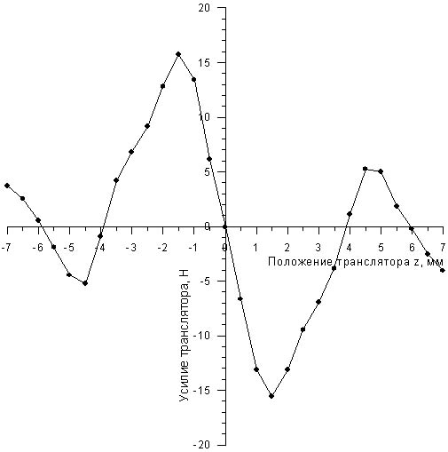
Рис. 6.5. Зависимость усилия, создаваемого транслятором линейного электрогенератора, от его положения при отсутствии тока в катушках статора (холостой ход).
Из таблицы 6.4 и рис. 6.5 следует, что когда транслятор находится в центральном положении, на него действует возвращающая сила при отклонении от этого положения примерно до +3.5 мм. Эта особенность может быть использована для замены возвратного механизма при функционировании данного генератора как утилизатора энергии колебательных движений. На рис. 6.6 показан совмещенный график зависимости ЭДС фаз и усилия транслятора при его движении в режиме холостого хода.
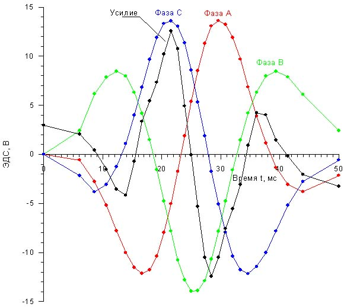
Рис. 6.6. Зависимость ЭДС фаз линейного электрогенератора и усилия транслятора от времени при движении транслятора из одного крайнего положения в другое в режиме холостого хода. Величина усилия показана условно.
При работе
электрогенератора под нагрузкой его ЭДС уменьшается вследствие наличия
противотока в обмотках (реакция якоря). Рассчитанные усредненные значения
максимумов магнитных потоков во внешнем ярме статора при плотности тока в
обмотках 3 А/мм2 (при факторе упаковки
l = 0.6 плотность тока в
проводе диаметром 0.3 мм равна 5 А/мм2, а величина тока составляет
0.3534 А):
Фаза A:
F0 = (77.8621 + 77.9185)/2 = 77.8903 мкВб
Фаза B:
F0 = (78.2061 + 77.0172)/2 = 77.61165 мкВб
Фаза C:
F0 = (77.8918 + 77.804)/2 = 77.8479 мкВб
Тогда с учетом:
получаем:
EA0
= 10.96 В
EB0
= 10.92 В
EC0
= 10.96 В
Величина тока фазы I = 0.3534 А достигается при подключении к каждой фазе нагрузки сопротивлением RH примерно 17 Ом. Выходная мощность P генератора, определяемая соотношением:
при этом составит примерно 6.4 Вт. ЭДС каждой фазы для режима работы под нагрузкой 17 Ом может быть записана в виде:
На рис. 6.7 показаны графики ЭДС разных фаз электрогенератора при движении транслятора от одного крайнего положения до другого (один ход) в режиме холостого хода и под нагрузкой.
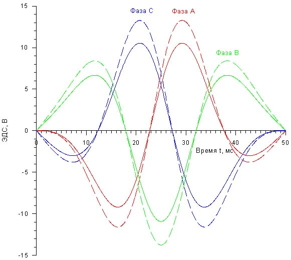
Рис. 6.7. Зависимость ЭДС фаз линейного электрогенератора и усилия транслятора от времени при движении транслятора из одного крайнего положения в другое в режиме холостого хода (пунктирные линии) и под нагрузкой примерно 17 Ом на каждую фазу (сплошные линии).
7. Оценка прикладываемых сил
Мгновенная электрическая мощность электрогенератора генератора P, выраженная через скорость транслятора dz/dt и потребную для генерации этой мощности силу привода FP (без учета потерь):
Так как скорость транслятора dz/dt определяется соотношением:

то его средняя скорость <dz/dt>:
Усредненное по ходу транслятора усилие <FP>:
где <P> -
усредненная выходная электрическая мощность электрогенератора.
Для значений:
<P> = 6.4 Вт
z0 = 0.007 м
F = 10 Гц
Амплитудное значение усилия FP будет примерно в 1.5 раза больше его среднего значения. С усилием привода FP, требуемым для генерации электрической мощности, сравнимы по величине колебания усилия транслятора за счет эффекта "магнитного залипания" (+16 Н). Хотя при работе под нагрузкой эффект "магнитного залипания" будет меньше за счет противотока в обмотках, который уменьшает результирующую магнитную индукцию в зубцах статора, в некоторых конструкциях генераторов могут потребоваться меры, снижающие этот эффект. При движении транслятора на холостом ходу прикладываемая к нему сила привода FM определяется вторым законом Ньютона [27]:
где m – масса транслятора, d2z/dt2 – его ускорение:
Таким образом при движении транслятора по гармоническому закону с амплитудой z0 и частотой F:
Амплитудное
значение силы для:
m = 0.127
кг (10 магнитов Nd-Fe-B типоразмера К20х10х4
плотностью 7.5 г/см3 – 71 г, 11 стальных шайб типоразмера К20х10х2
плотностью 8.3 г/см3 – 43 г, один центральный алюминиевый стержень
диаметром 10 мм длиной 70 мм плотностью 2.3 г/см3 – 13 г)
z0 = 0.007 м
F = 10 Гц
составит
примерно 3.5 Н, что существенно меньше средней величины усилия, расходуемого на
производство электрической мощности (23 Н) и колебаний усилия, связанных с
эффектом "магнитного залипания". Если же эта, по сути, инерционная сила
оказывается достаточно большой, то для ее компенсации может потребоваться
накопительная возвратная пружина или ее аналог (например, пневматическая
система), обеспечивающие резонансный характер колебательных движений
транслятора.
8. Выводы и заключения
8.1. Рассмотрены
электрогенераторы линейного типа, области их возможного использования, принцип
конструкции и ее варианты.
8.2. Для упрощения расчета выходной мощности линейного электрогенератора и
связанных с ней других его характеристик сделана оценка действующего значения
генерируемой им ЭДС через ее амплитудное значение.
8.3. Выполнен расчет ЭДС холостого хода несложной в практической реализации
модели электрогенератора двумя разными способами с хорошо совпадающими
результатами.
8.4. Выполнен расчет ЭДС и выходной мощности электрогенератора в режиме работы
под нагрузкой.
8.5. Анализ полученных результатов свидетельствует о том, что выходная мощность
электрогенератора в основном определяется магнитной энергией постоянных
магнитов, т. е. их объемом (массой) и удельной магнитной энергией (остаточной
индукцией и коэрцитивной силой), и частично может быть повышена за счет
оптимизации конструкции генератора. Диаметр обмоточного провода катушек в каждой
конкретной модели генератора определяет выходное напряжение, но не влияет на
выходную мощность.
8.6. Выполнен расчет усилия, создаваемого транслятором электрогенератора при
движении в режиме холостого хода. Результаты показывают, что при прохождении
магнитных полюсов транслятора мимо зубцов статора за счет их взаимного
притяжения возникает эффект "магнитного залипания",
который проявляется в волнообразном характере формы усилия, необходимого для
приведения транслятора в движение. Этот эффект может быть снижен за счет
применения многофазной (в частности, трехфазной) схемы электрогенератора,
дополнительным переменным фазовым сдвигом зубцов катушек одной фазы относительно
магнитных полюсов, а также увеличением числа зубцов статора в расчете на
магнитный полюс транслятора с частичным перекрытием обмоток разных фаз.
8.7. Сделана оценка усилия привода, требуемого как для создания электрической
мощности, так и для преодоления инерции транслятора. Если инерционные силы,
возникающие при возвратно-поступательном движении транслятора, велики, может
потребоваться регулируемый компенсаторный механизм - аналог возвратной пружины,
обеспечивающий резонансный переход кинетической энергии транслятора в
потенциальную энергию возвратного механизма и обратно при минимальной диссипации
и снижающий требуемое усилие привода до уровня, необходимого лишь для генерации
электрической мощности.
Ссылки:
27.01.2019
Альтернативные источники энергии
Компьютеры и
Интернет
Магнитные поля
Механотронные системы
Перспективные
разработки
Электроника и
технология